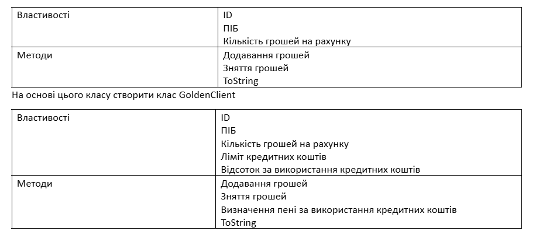
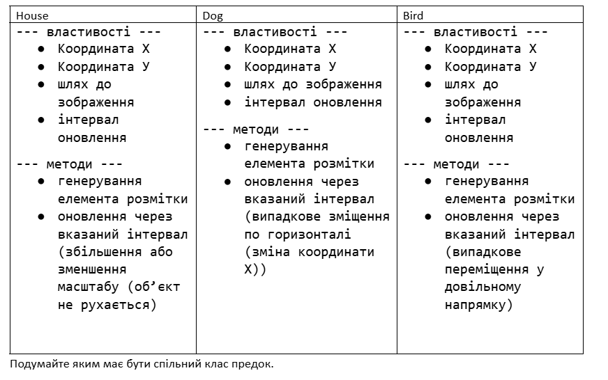

-

Завдання 01
Умова
Розробити клас Person (поля:ім'я, вік, адреса; методи: toString, визначення року народження). На основі класу Person розробити клас Worker (додати поля: посада, розмір заробітної плати, кількість відсотів оподаткування; методи:визначення кількості виплачених коштів за рік, та визначення розміру податків)
-
Завдання 02
Умова
Створити клас Client
 -
Завдання 03
Умова
Створити клас Bank, у якому зберігається масив клієнтів. Виконати такі операції:
- Вивести всіх простих клієнтів;
- Вивести всіх клієнтів GoldenClient;
- Знайти сумарну кількість грошей на рахунку;
-
Завдання 04
Умова
Розробити Класи
 -
Завдання 05
Умова
Користувач задає місяць навчання учня (перевіряти чи є числом, чи від 1 до 12, чи не канікули) та оцінку (перевіряти чи є числом, чи від 1 до 100). Вивести чи зможе він виправити оцінку (якщо оцінка погана і це не останній місяць у семестрі) . Обробку усіх помилок зробити з використанням відповідних класів.
-
Pair
Умова
Реалізувати класи TTime (“години.хвилини”) та TMoney (“гривні.копійки”), які містять методи збільшення/зменшення величин на 1 та додавання двох величин. Згенерувати поступово випадковим чином пар (час, гроші), де час – тривалість виконання роботи, а гроші – вартість однієї хвилини роботи працівників. Обчислити витрати на виконання кожної із робіт.
-
Задачі з уроку
Умова
Задачі з уроку